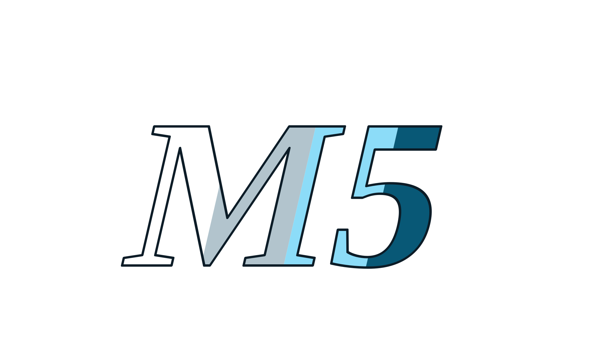

People
Organizers
Six people who brought students, clinical context and technical mentorship into the same room.
Select a person to read their role. The carousel pauses while you explore.
Programme institutions
Made together in Nairobi.
CDIECentre for Design,
Innovation & Entrepreneurship
Innovation & Entrepreneurship

Model inspirationUniversity of Sheffield
Hackcessible Nairobi draws inspiration from Sheffield’s model. Sheffield is not presented as an official programme partner.